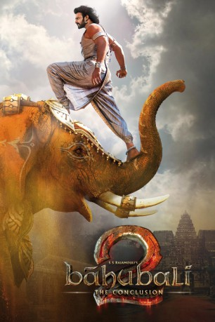

#10610 Bahubali 2 - The Conclusion
 gesehen am 17.05.2019
gesehen am 17.05.2019
 
 IMDB-Wertung: 8.3 / 10
IMDB-Wertung: 8.3 / 10  Metascore: 0
Metascore: 0 
Mit der indischen Fortsetzung Bahubali: The Conclusion wird die Geschichte um Baahubhali / Shivudu (Prabhas) beendet, die mit Bahubali: The Beginning (2015) ihren Anfang nahm. Nachdem der Vorgängerteil mit einem Cliffhanger endete, wird der mittelalterliche indische Konflikt in der Saga um zwei Brüder in einer epischen Schlacht sein Ende finden.
Jahr: 2017
Dauer: 167 Minuten
FSK: 16
Land: Indien Studio: Alive Vertrieb und MarketingTonspuren:
Untertitel: Deutsch,
Auflösung: 1080p (1920x808) Größe: 8693 MB
Genre: Action, Drama, Fantasy
Regisseur: S.S. Rajamouli
Drehbuch: Vijayendra Prasad, S.S. Rajamouli, C.H. Vijay Kumar, Ajay Kumar, Madhan Karky
Soundtrack: M.M. Keeravani
Darsteller:
- Prabhas als Amarendra Baahubali / Sivudu
- Rana Daggubati als Bhallaladeva
- Anushka Shetty als Devasena
- Sathyaraj als Kattappa
- Ramya Krishnan als Sivagami
- Tamannaah Bhatia als Avanthika
- Nassar als Bijjaladeva
- Sharad Kelkar als Baahubali (Hindi)
- Rohini als Sanga
- Subbaraju als Kumara Varma
- Meka Rama Krishna als King of Kunthala
- Tanikella Bharani als Swami Ji
- Aashish Maske als Srinu
- Ramakrishna Meka als Jaya Varma
- Prabhakar als Kalakeya King (flashback)
- Venkat Prasad als
- Prudhviraj als Prime Minister of the Kunthala Kingdom
- Shatru als Pindari Leader
- Charandeep Surneni als New Kalakeya King
- Rakesh Varre als Setu Patti
- Ashrita Vemuganti als Jayasena's Wife
Datei: X:\2-Dilogie(A-F)\Bahubali\Bahubali 2 - The Conclusion (2017, FSK16, 1920x808).mkv seit 03.02.2019
Festplatte: HD Collection-2(A-Z)-3(A-M)
 Alle Filme aus Gruppe '2-Dilogie(A-F)\Bahubali'
Alle Filme aus Gruppe '2-Dilogie(A-F)\Bahubali'